Trophies in Bloodborne are unlockable digital shelf rewards for your in-game accomplishments. This page lists the total trophies and a guide on how to obtain them. Please beware of spoilers.
- Click the table header to sort.
Bloodborne Trophies
| Trophy | How to Obtain | Value |
|---|---|---|
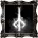BloodborneAll trophies acquired. Hats off! |
Get every other trophy. | |
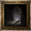Yharnam SunriseYou lived through the hunt, and saw another day. |
Accept Gehrman's final request. | |
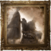Honouring WishesCaptivated by the moon presence, you pledge to watch over the hunter's dream. |
Defeat Gehrman without ever consuming three One Third of Umbilical Cord. | |
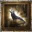Childhood's BeginningYou became an infant Great One, lifting humanity into its next childhood. |
Acquire and consume three One Third of Umbilical Cord. Before defeating Gehrman. | |
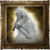Yharnam, Pthumerian QueenDefeat Yharnam, Blood Queen of the Old Labyrinth. |
Defeat Yharnam, a boss at the final layer of the Great Pthumeru Ihyll Chalice. | |
Hunter's EssenceAcquire all hunter weapons |
Acquire all Weapons. Firearms included. | |
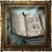Hunter's CraftAcquire all special hunter tools. |
Acquire all Hunter Tools. | |
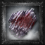Weapon MasterAcquire a weapon of the highest level. |
Fully upgrade a Weapon. See Workshop for information on how to do this. | |
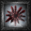Blood Gem MasterAcquire an extremely precious blood gem. |
Obtain a Blood Gem of rank 15 or higher which can be found in depth 4+ Dungeons. | |
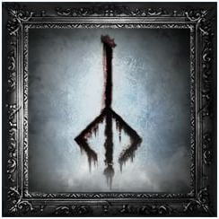Rune MasterAcquire an extremely precious Caryll Rune. |
In the elevator behind the locked right door in Cathedral Ward there's a hidden path that leads to one of these runes. | |
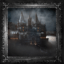CainhurstGain entry to Cainhurst, the lost and ruined castle. |
Acquire Cainhurst Summons, then head to the monument at Hemwick's Crossing. | |
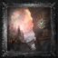The ChoirGain entry to the realm of the Choir, the high stratum of the Healing Church. |
Acquire Upper Cathedral Key, and head to the top of the Cathedral Ward. | |
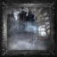The Source of the DreamDiscover the abandoned old workshop, the source of the hunter's dream. |
Hidden door in the cathedral towers basement. Don't jump all the way down. | |
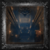Nightmare Lecture BuildingGain entry into the Byrgenwerth lecture building, that drifts within the realm of nightmare. |
After defeating The One Reborn or being grabbed by the lesser Amygdala in Cathedral Ward while having the tonsil stone in your inventory. | |
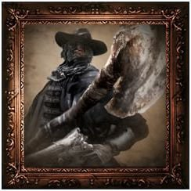Father GascoigneDefeat the beast that once was Father Gascoigne. |
Defeat Father Gascoigne in Central Yharnam. | |
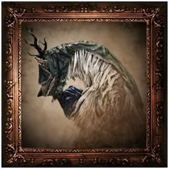Vicar AmeliaDefeat the beast that once was Vicar Amelia. |
Defeat Vicar Amelia in Cathedral Ward. | |
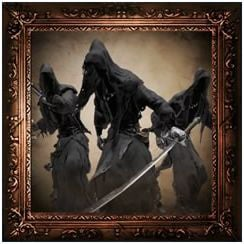Shadow of YharnamDefeat the Shadow of Yharnam. |
Defeat Shadow of Yharnam in Forbidden Woods. | |
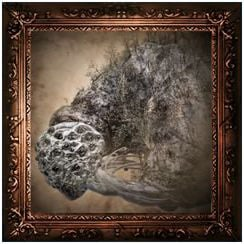Rom, the Vacuous SpiderDefeat Great One: Rom, the Vacuous Spider. |
Defeat Rom, the Vacuous Spider at Moonside Lake. | |
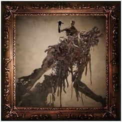The One RebornDefeat the One Reborn. |
Defeat The One Reborn in Yahar'gul Chapel. | |
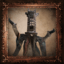Micolash, Host of the NightmareDefeat Micolash, Host of the Nightmare. |
Defeat Micolash, Host of the Nightmare in Mergo's Loft Base. | |
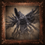Mergo's Wet NurseDefeat Great One: Mergo's Wet Nurse. |
Defeat Mergo's Wet Nurse in Mergo's Loft: Middle. | |
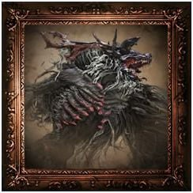Cleric BeastDefeat Cleric Beast. |
Defeat Cleric Beast in Central Yharnam. | |
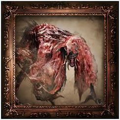Blood-starved BeastDefeat Blood-starved Beast. |
Defeat Blood-starved Beast in Old Yharnam. | |
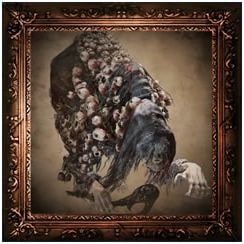The Witch of HemwickDefeat the Witch of Hemwick. |
Defeat Witch of Hemwick in Hemwick Charnel Lane. | |
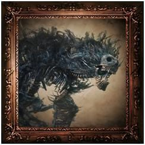Darkbeast PaarlDefeat Darkbeast Paarl. |
Defeat Darkbeast Paarl in Graveyard of the Darkbeast. | |
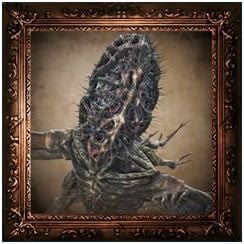AmygdalaDefeat Great One: Amygdala. |
Defeat Amygdala in Nightmare Frontier. | |
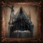Martyr LogariusDefeat Martyr Logarius. |
Defeat Martyr Logaruis in Cainhurst Castle. | |
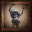Celestial EmissaryDefeat Great One: Celestial Emissary. |
Defeat Celestial Emissary in Lunar Flower Garden. | |
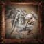Ebrietas, Daughter of the CosmosDefeat Great One: Ebrietas, Daughter of the Cosmos. |
Defeat Ebrietas, Daughter of the Cosmos in the Altar of Despair. | |
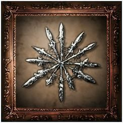Blood Gem ContactAcquire a blood gem that imbues hunter weapons with special strength |
Acquire a Blood Gem. | |
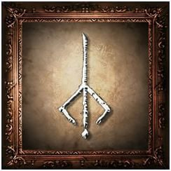Rune ContactAcquire a Caryll Rune that endows hunters with special strength. |
Acquire a Caryll Rune. | |
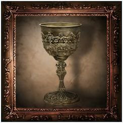Chalice of PthumeruAcquire the Chalice of Pthumeru that seals the catacombs that form a web deep below Yharn... |
Acquire Chalice of Pthumeru (defeat Blood-Starved Beast). | |
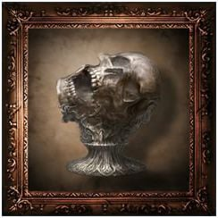Chalice of Ailing LoranAcquire the Chalice of Ailing Loran that seals the tragic land lost to the sands. |
Defeat Amygdala. | |
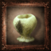Chalice of IszAcquire the Great Chalice of Isz that seals the home of the cosmic kin. |
Defeat Ebrietas, Daughter of the Cosmos. |
The Old Hunters Trophies
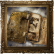Old Hunter's EssenceAcquire all old hunter weapons. |
Acquire all The Old Hunters Weapons | |
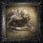Orphan of KosDefeat Great One: Orphan of Kos. |
Defeat Orphan of Kos | |
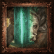Ludwig, the Holy BladeDefeat the beast that was once Ludwig, the Holy Blade. |
Defeat Ludwig | |
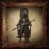Lady Maria of the Astral ClocktowerDefeat Lady Maria of the Astral Clocktower. |
Defeat Lady Maria | |
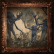Living FailuresDefeat the failed attempts to become Great Ones. |
Defeat Living Failures | |
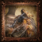Laurence, the First VicarDefeat the beast that was once Laurence, the First Vicar. |
Defeat Laurence |
Artwork
{kind=link}
 Anonymous
Anonymousfor Hunter's Essence, does it all have to be on the same character?
- Anonymous
So no one's gonna talk about the fact that there are achievements for killing BSB, Amygdala and Ebrietas, but also for getting the Pthumeru, Loran and Isz chalices? Devs were a bit lazy for trophies imo
- Anonymous
Yharnam sunrise and Pthumerian queen is all thats left for me
- Anonymous
Seriously, how many scrubs own this game that less than half of players have beaten the first boss according to the psn trophy percentage
- Anonymous
for the weapon master trophy: Does it matter if you get the uncanny/lost version instead of the normal one? Like do the special versions count? Or do I always need to get the normal weapon for it to count for the trophy?
- Anonymous
- Anonymous
Thank god theres no collectathon quest trophies like in DS3
- Anonymous
To get the hunter's essence trophy, you need to get the beast claw from the ailing loran chalice for it to count since the one in the dlc counts toward the dlc trophy. Its at the beginning of the second layer, the room after the first boss.
- Anonymous
Got all the weapons, didn't get the trophy. Thought it was the bug, so I made a new character. Half a year and numerous weapons later, still no trophy. I'm at my wit's end here.
- Anonymous
- Anonymous
Do weapons obtained with other characters count toward the hunter's essence trophy?
- Anonymous
hi i sold one of my hunter tools. should i have all of them at same time to unlock trophy?
- Anonymous
It was pretty easy to obtain the platinum. I needed only a character and one ng cycle, except for the other two endings that made me complete the game other two times in ng+ and in ng+2
- Anonymous
For whatever reason, I'm not getting hunters essence, and I just bought the only firearm I havent gotten until now and I have had all the weapons, does it need to be on one character?
- Anonymous
Neither the Wooden shield is not required for the hunters essense or you just have to had held each one at any point.
- Anonymous
Do you need the lost and uncanny versions of weapons for the hunter essence trophy?
- Anonymous
Is the Trophy menu for Bloodborne glitched? I currently only have 5 more trophies to get from the main game and 2 from the DLC, but the progress still says 57%, which definitely doesn't add up with 40 trophies in full.
- Anonymous
So I have played and beat Bloodborne multiple times, including the DLC. I am trying for the first time to go for the platinum. I have done just about everything else but I was curious about one of them... Hunter's Essence, when it says to acquire all the weapons, does that include the lost and uncanny versions as well or just the standard ones you find in game?
- Anonymous
Did From Software nuke the ability to reload a save file via USB in the latest patch? I made several backups prior to beating the game the first time, and every time I restore a save it brings me to the first NG+ save. Maybe they got wise and started saving data to a hard drive cache folder or something to prevent cheesing? Anyone else run into this issue? I really love the game, but I don't have the time or the desire to play through 2 more times to platinum...
- Anonymous
I have to say, I found getting platinum in Dark Souls III to feel like much more of an accomplishment than in Bloodborne. Then again, Dark Souls III had trophies that rewarded you for carefully exploring in NG+, adding to replay value, whereas Bloodborne's replay value is more confined to chalice dungeons than NG+ (I mean, most of the game can be skipped), but chalice dungeons felt like a chore to me, so I'm just kinda meh about this. Am I the only one who feels like this? I don't mean to get other people down who liked getting plat, because good for you, really, don't take it the wrong way. I'm just wondering if I'm being the weirdo here or if there was something a little unsatisfying in general about all this.
- Anonymous
- Anonymous
- Anonymous
I have a question do you need to have all the weapons in your inventory for the trophy
- Anonymous
I played this game when it first came out (before Valtr was added) and when I had collected every hunter's tool (that existed at the time), I didn't receive the trophy.Now, I've returned to the game to play the DLC, and I've found ALL the hunter's tools -- this includes the Madaras Whistle and all of the new tools in the DLC -- and I still haven't triggered the trophy.Does the trophy only trigger in NG+? Do I have to defeat all of the DLC bosses (Laurence included) AND finish the first game for it to unlock? Have I just encountered an awful glitch, forcing me to try making a third character and try again? Do I just need to git gud?
- Anonymous
Hey, does anybody know how to create a backup file on the ps4 because i dont want to beat the game three times to get all the ending throphies, thanks
- Anonymous
For Childhood's Beginning, does it matter which option I choose at Gerhman?
- Anonymous
we have to kill the endboss 3 times to achieve it? Got any trophy in my first playthrough expect of yharnam sunrise and honouring wishes.
- Anonymous
- Anonymous
Can anybody help me? I aquired every single weapon in the wiki by now but I have not obtained the trophy yet? Do I need to farm the chalice dungeons for the alternative versions because every trophy guide I red didnt say so. Im confused.
- Anonymous
Does this trophy require the different versions of each weapon? Like in Dark Souls, you had to have both the Greatsword of Artorias and Greatsword of Artorias (cursed), which necessitated an extra half a playthrough on its own...
Even though I have beaten them, I did not get (or at least have) darkbeast's, the one reborn's and celestial's trophies. Also didn't get the gem master (16 should be enough) and the choir. What the hell? Has anyone experienced this?
My friend is also missing a few nos trophies
- Anonymous
Do I need to buy every weapon and own it once on the same character or no?
- Anonymous
I have yet to progress into NG+ and have just found the Lost Burial Blade in a Sinister Root Phtumeru Ihyll chalice dungeon with Rotted and Fetid offerings, but I didn't get the trophy for aquiring all the weapons. I know the regular burial blade is not unlocked until NG+ and I wonder if all of the "Lost" and "Uncanny" weapons are ignored by the game when it comes to getting the trophy.
- Anonymous
- Anonymous
I made sure i got all the weapons listed, some with 2 or 3 copies in my inventory but it didn't unlock.
- Anonymous
Like can i have gotten all of the weapons but on multiple different characters?
- Anonymous
- Anonymous
Hey guys, someone helped me beating yharnam the Pthumeru queen. The thing is by helping me he also got the trophy. So if i help someone beating the secret boss (after beating gehrman), do i also get the trophy for the third ending?
- Anonymous
After beating the chalice dungeons I feel like I've done something good. The cursed Pthumerian defilement and Ebrietas, Daughter of the cosmos in Isz gravestone were some of the toughest challenges that I've faced as a gamer. I spent the whole day just trying to beat them. A cording to PSN I'm one of only 5.2% of people who played Bloodborne who have the platinum trophy for Bloodborne, and it's my first ever platinum.
- Anonymous
This was for me the hardest fight. I played with 24fps because of my very bad monitor but at the end of the day, after a really long while, i managed to beat him. That was one of the most pleasant feelings i ever experienced in the souls games... I know that the feeling was similar, when i beat Manus without the item to dodge the black magics... Bloodborne was a fantastic game.
- Anonymous
It's possible to get all three endings without New Game+. You need a thumb drive and save data that hasn't eaten 3 umbilical cords and is right before Gehrman. Transfer the save data to the drive, load the game, accept Gehrman's offer. Once you get the trophy, quit, and transfer the save on the drive to your system. Load the game, Decline the offer, kill Gerhman, get the trophy, quit. Transfer the save to the system, nom the cords, kill Gehrman, kill Moon Presence, get trophy. Ta-da.
3
+10
-1